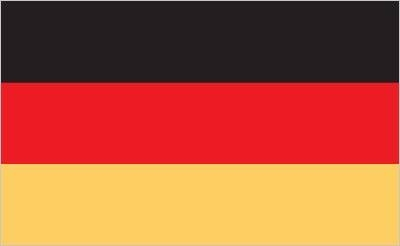
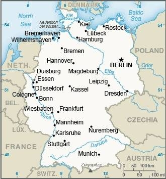

Federal Republic of Germany
Introduction
As Europe's largest economy and second most populous nation (after Russia), Germany is a key member of the continent's economic, political, and defense organizations. European power struggles immersed Germany in two devastating world wars in the first half of the 20th century and left the country occupied by the victorious Allied powers of the US, UK, France, and the Soviet Union in 1945. With the advent of the Cold War, two German states were formed in 1949: the western Federal Republic of Germany (FRG) and the eastern German Democratic Republic (GDR).
The democratic FRG embedded itself in key western economic and security organizations, the EC (now the EU) and NATO, while the communist GDR was on the front line of the Soviet-led Warsaw Pact. The decline of the USSR and the end of the Cold War allowed for German reunification in 1990. Since then, Germany has expended considerable funds to bring eastern productivity and wages up to western standards. In January 1999, Germany and 10 other EU countries introduced a common European exchange currency, the euro.
Geography
Location
Germany is located in Central Europe, bordering the Baltic Sea and the North Sea, between the Netherlands and Poland, south of Denmark.
Area
- total: 357,022 sq km
- land:348,672 sq km
- water:8,350 sq km
Area - comparative
Germany is three times the size of Pennsylvania; slightly smaller than Montana
People and Society
Population
Approximately 84,220,184 (2023 est.) live in Germany.
Ethnic Groups
| German | 86.3% |
| Turkish | 1.8% |
| Polish | 1% |
| Syrian | 1% |
| Romanian | 1% |
| other/stateless/unspecified | 8.9% (2020 est.) |
Languages
- German (official);
- Minority Languages (Official)
- Danish
- Frisian
- Sorbian
- Romani
- Regional Languages
- Low German
- Danish
- North Frisian
- Sater Frisian
- Lower Sorbian
- Upper Sorbian
- Romani
Government
Administrative Divisions
16 states (Laender, singular - Land):
- Baden-Wuerttemberg
- Bayern (Bavaria)
- Berlin
- Brandenburg
- Bremen
- Hamburg
- Hessen (Hesse)
- Mecklenburg-Vorpommern (Mecklenburg-Western Pomerania)
- Niedersachsen (Lower Saxony)
- Nordrhein-Westfalen (North Rhine-Westphalia)
- Rheinland-Pfalz (Rhineland-Palatinate)
- Saarland
- Sachsen (Saxony)
- Sachsen-Anhalt (Saxony-Anhalt)
- Schleswig-Holstein
- Thueringen (Thuringia)
note - Bayern, Sachsen, and Thueringen refer to themselves as free states (Freistaaten, singular - Freistaat), while Bremen calls itself a Free Hanseatic City (Freie Hansestadt) and Hamburg considers itself a Free and Hanseatic City (Freie und Hansestadt).
Independence
- 8 January 1871 (establishment of the German Empire);
- divided into four zones of occupation (UK, US, USSR, and France) in 1945 following World War II;
- Federal Republic of Germany (FRG or West Germany) proclaimed on 23 May 1949 and included the former UK, US, and French zones;
- German Democratic Republic (GDR or East Germany) proclaimed on 7 October 1949 and included the former USSR zone;
- West Germany and East Germany unified on 3 October 1990 ;
- all four powers formally relinquished rights on 15 March 1991;
- notable earlier dates: 10 August 843 (Eastern Francia established from the division of the Carolingian Empire); 2 February 962 (crowning of Otto I, recognized as the first Holy Roman Emperor).
National Holiday
German Unity Day, 3 October (1990)
Johanela Hinz
jmh428@miami.edu